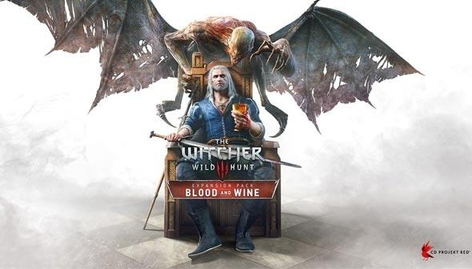

Hearts of Stone est la première extension payante de The Witcher 3 : Wild Hunt. Elle est sortie le 13 octobre 2015.
Hearts of Stone emportera Geralt dans une nouvelle aventure d'une dizaine d'heures dans les Terres désolées et les recoins d'Oxenfurt, où il sera confronté au chef impitoyable d'une bande de brigands, Olgierd von Everec, un homme au coeur de pierre doté du pouvoir de vivre éternellement.
Geralt tentera également de remplir un contrat pour l'énigmatique Homme de verre. Confronté aux mensonges, Geralt aura besoin de toute son intelligence et sa force pour résoudre le mystère et s'en sortir indemne.

La première bande-son (que vous pouvez écouter en intégralité sur Spotify, composée exclusivement par Marcin Przybyłowicz, reflète assez bien son contenu général : assez courte (ne comporte que 11 pistes) et dans la continuité de la bande-son d'origine.
Avant toute chose, il nous faut remettre les choses dans leur contexte. Lorsque l'on touche le bout de Wild Hunt, on peut repartir à l'aventure, dans un premier temps, avec Hearts of Stone. L'histoire ne mènera pas le sorceleur Geralt de Riv très loin, puisque la zone où se déroule l'intrigue n'est qu'une extension à Velen, la région précédemment explorée.
La majorité des thèmes importants, les musiques de combat et d'environnement notamment, sont repris de l'OST de Wild Hunt. C'est la raison pour laquelle le nombre de nouvelles pistes est assez limité.
En revanche, qui dit nouveaux personnages, dit nouveaux thèmes. Le mystérieux Gaunter de Meuré (Gaunter O'Dimm en anglais), ou Maître Miroir, est omniprésent tout au long de la trame principale. Son thème, que l'on entend une première fois dans la piste Hearts of Stone est en réalité repris et réarrangé dans presque chacune des pistes de la bande (concrètement, il n'est pas présent dans You're... Immortal?, Dead Man's Party et The House of the Borsodis). Sûrement pour creuser le mystère qui l'entoure, et faire pression sur le joueur. En effet, sans risquer de spoiler quoi que ce soit, on ne peut pas parler de l'OST de Hearts of Stone sans évoquer l'ambiance particulièrement oppressante qui règne tout au long de la partie. Et d''une manière beaucoup plus prononcée que l'on ne pourra jamais ressentir dans tout le jeu de base…
Le kemençe, instrument à cordes frottées folklorique (et utilisé notamment dans la région de la mer Noire), déjà présent dans l'OST de Wild Hunt, est surreprésenté, notamment dans les pistes Mystery Man, Whatsoever a Man Soweth…, The Temple of Lilvani ou encore A Gifted Man Brings Gifts Galore (version anglaise et chanson en français, j’ai pas trouvé mieux désolé...).
On retrouve le travail de Percival dans deux des pistes, l'une aux sonorités épiques (You're... Immortal?) et l'autre plutôt dansante (Dead Man's Party).
Dans l'ensemble, la bande sonore de Hearts of Stone reste du même acabit que celle de Wild Hunt. Toujours très portée sur l'ambiance, elle retranscrit à merveille la sensation d'inconfort et les interrogations du joueur. Écoutée individuellement, elle laisse quand même un peu sur sa faim, par sa durée notamment.
-Daniel Lobé : Geralt de Riv
-Frédéric van den Driessche : Gaunter de Meuré
-Jean-Christophe Lebert : Olgierd von Everec
-Véronique Desmadryl : Shani
-Frédéric Popovic : Vlodomir von Everec
-Dominique Vallée : Iris von Everec, Adela
-Jean-Loup Horwitz : Vimme Vivaldi
-Marc Bretonnière : Horst Borsodi
-Sylvain Agaësse : Ewal Borsodi
-Emmanuèle Bondeville : Chat noir
-Raphaël Cohen : Chien noir, Johnnus de Bogar, le marié
-Jérémy Prévost : Quinto
-Fily Keita : Eveline, Aldona Lamch, la mariée
-Thierry Buisson : Ulrich, le grand maître des chevaliers déchus de l'Ordre de la Rose-Ardente, Casimir Bassi
-Philippe Bozo : le professeur Tremblegond
Blood and Wine est la seconde et dernière extension payante pour The Witcher 3 : Wild Hunt. Annoncée le 7 avril 2015, avec Hearts of Stone, elle est sortie le 31 mai 2016 sur PC, Xbox One et Playstation 4.
Geralt de Riv, le tueur de monstres légendaire, accepte son dernier grand contrat. Il se rend à Toussaint, une lointaine contrée épargnée par la guerre, le pays des chevaliers errants, des nobles damoiselles et des vignobles d'exception, mais néanmoint théâtre de violents massacres. Où il lèvera le voile sur le terrible secret derrière la bête qui
terrorise le duché et assassine les chevaliers de la principauté. En démeulant l'écheveau complexe des pistes au cœur d'un mystère que seul un sorceleur pourra élucider, tout en survivant au mal tapi à la faveur de la nuit.
Pour la seconde et dernière extension à The Witcher 3, les développeurs comme les compositeurs ont tenté de nous offrir une fin grandiose digne de la saga. La musique (disponible sur Spotify) n'y coupe pas : 25 pistes (au moins) pour lesquelles ont participé non seulement les artistes d'origine, Marcin Przybyłowicz, Mikolai Stroinski et Percival, auxquels s'ajoute le jeune Piotr Musiał fraîchement arrivé.
Partons maintenant pour une autre contrée, Toussaint, qui se veut aux antipodes de ce que l'on a vu (ou entendu) jusque-là. Couleurs chatoyantes, lumière et chaleur estivales, joie de vivre, rien à voir avec les marais boueux ou les plaines enneigées que l'on a visitées plus tôt. Et pourtant, on sait à quoi s'attendre dans The Witcher. Les apparences sont trompeuses et l'on va le découvrir ensemble avec la bande-son de Blood and Wine. Les 25 pistes composées pour cette extension contribuent à l'ambiance, à l'instar de celles entendues sur l'archipel de Skellige, spécifiquement destinée à la nouvelle région. De plus, Piotr Musiał apporte du sang neuf à la bande-son, et même s'il n'a composé que 7 pistes en personne, on ne peut que louer le fait de vouloir présenter aux joueurs de nouvelles choses.
Comme à l'accoutumée, entrons dans le vif du sujet avec le thème éponyme de l'extension, Blood and Wine. Contrairement aux thèmes des OST précédentes, on a ici un thème chanté. Interprété en polonais par Barbara Kałużna, en anglais par Laura Doddington, en français par Marie Zidi (également doubleuse de Triss Merigold dans The Witcher 1) et Jessica Jeza Vautor aux voix, il s'agit en fait de la chanson A Night to Remember du trailer de pré-lancement du jeu, publié en mai 2015. Ressemblant à une comptine pour enfant, elle n'en est pas moins dans l'esprit de la saga, plutôt sombre par ses paroles.
Pour trancher avec l'ambiance de l'OST de Wild Hunt, on entend dans de nombreuses pistes des chants et des voix. On retrouve évidemment ceux de Percival dans certaines pistes comme For Honor! for Toussaint!, I Cannot Let You Leave, Wine Wars ou encore Tesham Mutna, autrement dit, la plupart des thèmes de combat où le côté sauvage est appuyé. En revanche, les voix (toujours de Jessica Jeza Vautor, soit dit en passant) sont également présentes dans les pistes calmes, telles que Fanfares and Flowers, The Banks of the Sansretour, Vivienne, What Lies Unseen, ou Lady of the Lake, pour ne citer qu'elles.
Pour mettre en valeur l'inspiration française de Toussaint, on constate une autre nouveauté apportée par cette bande-son : les mélodies jouées principalement à l'accordéon. Si on l'entend dans plusieurs pistes (Seeking Resonance), il ressort plus particulièrement dans la deuxième partie de On the Champs-Désolés, ou encore The Slopes of the Blessure.
Le Gwynt, accompagné de ses pistes dansantes aux consonances médiévales est encore de la partie avec The Musty Scent of Fresh Pâté, The Mandragora ou Searching for Cecilia Bellant. Si l'on a droit, durant le jeu, à cinq pistes aux mélodies variées, on peut néanmoins regretter que seules les trois citées précédemment soient présentes dans la bande-son officielle.
Le dernier élément notable dans l'OST de Blood and Wine concerne ces quelques pistes aux allures enchanteresses. Si on remarque l'ambiance spécifique, par instants, de Vivienne ou encore Syanna, cette impression est encore plus prononcée et même omniprésente avec Beyond Hill and Dale, dans laquelle on entend des sons très variés de harpe, clochettes et autres chants donnant à cette piste des airs de conte de fée, qui, pourtant, garde un côté bien sinistre et mélancolique. On pourrait d'ailleurs y trouver certains points communs avec les musiques de films de Tim Burton, par exemple (ou plutôt Danny Elfman, pour la composition).
L'OST de Blood and Wine, à la manière de celle de Wild Hunt, reste donc dans le domaine de la musique d'ambiance : en jeu, elle s'intègre parfaitement aux environnements et aux contextes. Elle ne choque pas malgré son côté parfois atypique, mais elle a aussi tendance à ne pas trop marquer les esprits. On peut néanmoins considérer que cette bande sonore est plus originale et variée que les précédentes. Si les compositeurs ont réutilisé dans l'ensemble les mêmes instruments que dans leurs compositions précédentes, l'ordre et l'importance avec lesquels ils en ont fait usage change suffisamment pour offrir aux joueurs le dépaysement dont ils avaient besoin avec cette extension.
-Daniel Lobé : Geralt de Riv
-Ingrid Donnadieu : Anna Henrietta
-Patrick Borg : Regis
-David Krüger : Dettlaff
-Barbara Beretta : Syanna
-Franck Monsigny : Damien de la Tour , un peintre, Hugo Monnart, Pierre, un tailleur à Beuclair
-Antoine Tomé : Milton de Peyrac-Peyran, Jacob le bûcheron
-Sébastien Desjours : Palmerin de Launfal, l'ambassadeur von Hinn
-Philippe Valmont : Guillaume de Launfal, le trésorier ducal
-Noémie Orphelin : Vivienne de Tabris
-Adrien Larmande : Barnabas-Basil Foulty, le scribe du Tournoi des chevaliers
-Renaud Marx : le Camerlingue de Toussaint, Rafael de Surmann, le prince Anséis, François le Goff, Gaston, Jean-Christophe de Bourbeau, Barberousse
-Pierre Tessier : le comte Beledal
-Patrick Mancini : le Papillon, Ablette
-Adeline Chetail : Matilda de Vermentino, le cireur de chaussure
-Marie Zidi : la Dame du Lac, Orianna
-Philippe Catoire : le doyen des Invisibles, Lazare Lafargue, Beau Duvall, le Grand Méchant Loup
-François Siener : l'Ermite, Rainfarn d'Attre